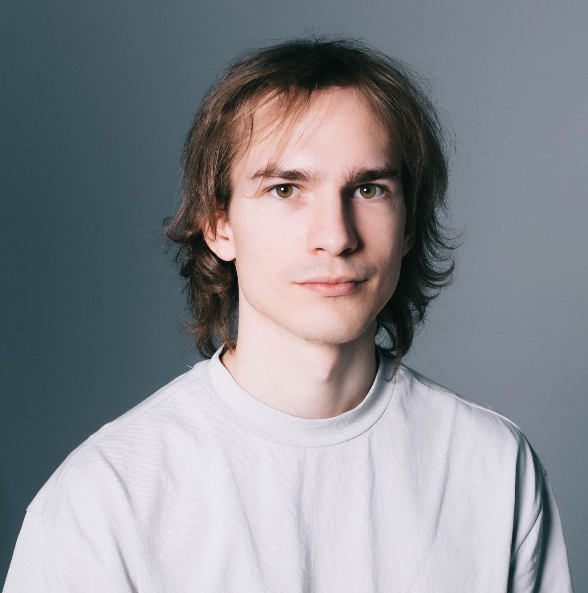

Фонд «Жизнь как чудо» обучает педиатров и неонатологов из регионов распознавать редкие заболевания печени у детей. Брал интервью с врачами-участниками программы — о том, как новые знания уже помогли поставить правильный диагноз.
16 педиатров из разных городов прошли курс по врождённым и наследственным заболеваниям печени у новорождённых. Рассказал об образовательной программе фонда и о том, как ранняя диагностика меняет исходы для детей.
Игорь Лисник — один из 55 россиян, финишировавших на всех шести крупнейших марафонах мира: Нью-Йорке, Бостоне, Чикаго, Лондоне, Берлине и Токио. Восемь лет параллельно собирает деньги для детей с тяжёлыми заболеваниями печени.
На основе интервью с инструкторами и опытными сёрферами: какое снаряжение выбрать, где учиться, как выглядит первое занятие и каких ошибок чаще всего не избежать в начале.
Перед редизайном сайта частной клиники агентство провело глубинные интервью с пациентами. Записал историю исследования: как разговоры с двенадцатью людьми дали концепцию, которую никакой бриф не подсказал бы.
Дизайнер «беты» пишет музыку — и рассказывает, чем трогательная песня похожа на хороший интерфейс.
Арт-директор «беты» проходит по самым частым ступорам в работе над концепцией — и объясняет, как из них выйти.
Сайты, которые вызывают не только эмоциональный, но и физический отклик. Про ощущения в дизайне — не про теорию.
Продюсер «беты» — о том, как избавился от скромности, что такое харизматичный брендинг и почему сначала нужно разобраться в себе.
Слабовидящая девушка становится оператором документального фильма о своём взгляде. Вместо того чтобы снимать о ней — снимали вместе с ней. Фильм исследует, что значит «видеть».
Закончил СПбГИКиТ по режиссуре документального кино. Снял два фестивальных фильма.
Последние два года работаю с текстом: редактор, автор, копирайтер. Умею брать интервью, адаптировать сложное для широкой аудитории, следить за аналитикой.
Ищу удалённую работу. Интересны медиа, культурные, образовательные, инклюзивные проекты.